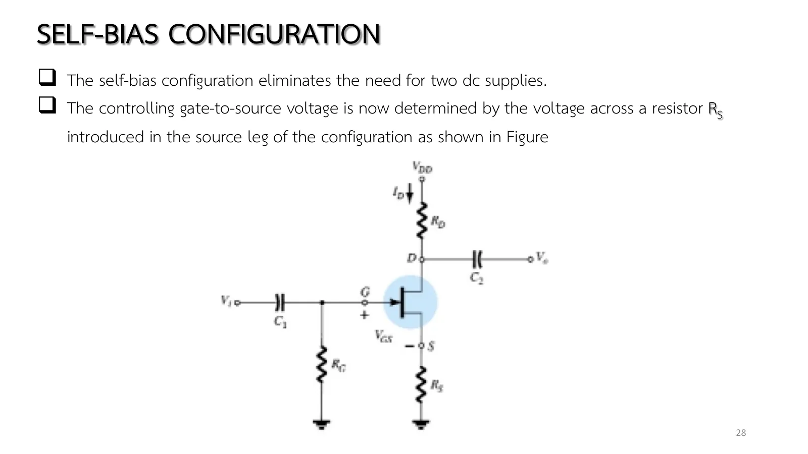
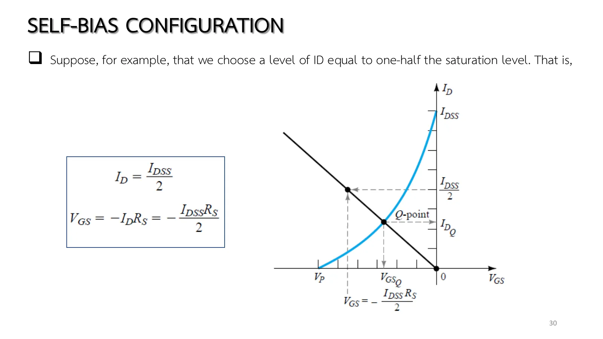
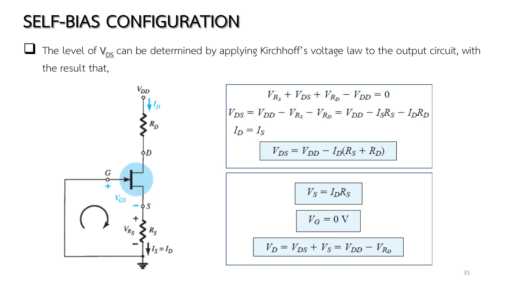
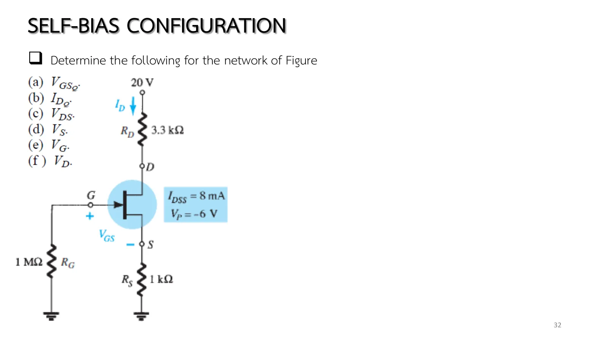
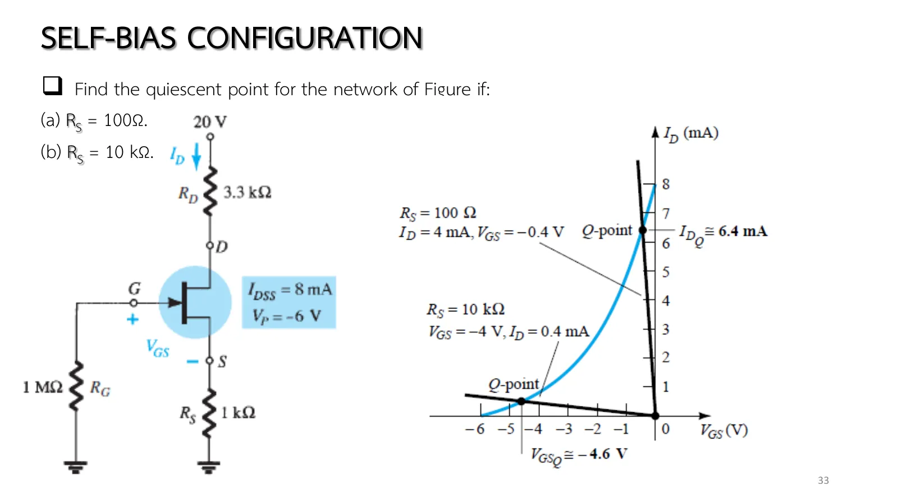

The fixed bias of page 5.3 needs two supplies. Why not drop \(V_{GG}\) and let the junction field-effect transistor (JFET) find its own gate voltage? Self bias does it with a single resistor: the current \(I_D\) through \(R_S\) lifts the source above the gate (held at 0 V through \(R_G\)), giving \(V_{GS} = -I_DR_S\), which depends on \(I_D\) itself. On the transfer graph this is a straight line through the origin; where it crosses Shockley's curve is Q (graphically), or substitute and solve the quadratic. This page has a circuit whose \(R_S\), \(R_D\), \(V_{DD}\) and device you can change (section A), Example 7.2 in all six parts, Example 7.3 on the effect of \(R_S\), and more practice (chapter 5 slides, pp. 28–33; Boylestad section 7.3).
The circuit (slide p. 28, Fig. 7.8): fixed bias with \(R_S\) added and \(R_G\) returned to ground. For dc the capacitors are open and \(R_G\) is a short (\(I_G\) = 0), leaving the network of Fig. 7.9.
The network equation (slide p. 29): the current in \(R_S\) is \(I_S = I_D\); the gate–source loop \(-V_{GS} - V_{R_S} = 0\) gives \(V_{GS} = -I_DR_S\) (Eq. 7.10), no longer fixed. Substituting into Shockley's equation gives a quadratic in \(I_D\) (the mathematical approach).
The graphical approach (slide p. 30, Figs. 7.10–7.11): Eq. 7.10 is a straight line through (0, 0); for the second point choose any \(I_D\), say \(I_{DSS}/2\), then \(V_{GS} = -I_{DSS}R_S/2\); draw the line, and its intersection with the transfer curve is Q.
The effect of \(R_S\) (slide p. 33, Example 7.3): a small \(R_S\) makes the line steep, close to the \(I_D\) axis (Q near \(I_{DSS}\)); a large \(R_S\) makes it flat, close to the \(V_{GS}\) axis (Q near \(V_P\)). Beware: an answer from the curve alone may be impossible in the drain loop (Example 7.3a).
Slide p. 28 (Fig. 7.8) looks like the fixed-bias circuit, but \(V_{GG}\) is gone, \(R_G\) goes to ground, and \(R_S\) appears in the source leg. The controlling voltage now comes from the drop across \(R_S\) itself: the gate sits at 0 V while the source is lifted by \(I_DR_S\), so the gate is below the source without any battery.
A bonus comes with it: the circuit regulates itself. If \(I_D\) tries to grow, the drop across \(R_S\) grows with it, \(V_{GS}\) goes more negative, and the current is pulled back down.

สไลด์บทที่ 5 หน้า 28: วงจรไบแอสตัวเอง (รูป 7.8) · แตะรูปเพื่อขยายChapter 5 slide p. 28: the self-bias circuit (Fig. 7.8) · tap to enlarge
Slide p. 29 removes the capacitors, shorts \(R_G\) (\(I_G\) = 0) and walks the gate loop to \(V_{GS} = -I_DR_S\); put into Shockley's equation, that becomes a quadratic in \(I_D\). Slide p. 30 takes the graphical shortcut instead: the line always passes through the origin, so one more point is enough, for instance at \(I_D = I_{DSS}/2\). Slide p. 31 walks the drain loop to \(V_{DS} = V_{DD} - I_D(R_S + R_D)\). Before moving \(R_S\), work out the second point at \(I_{DSS}/2\) in your head and compare it with the point the simulation marks.
สไลด์หน้า 29: \(V_{GS} = -I_DR_S\) และสมการกำลังสอง (รูป 7.9) · แตะรูปเพื่อขยายSlide p. 29: \(V_{GS} = -I_DR_S\) and the quadratic (Fig. 7.9) · tap to enlarge

สไลด์หน้า 30: จุดที่สองของเส้นที่ \(I_{DSS}/2\) และจุด Q (รูป 7.11) · แตะรูปเพื่อขยายSlide p. 30: the line's second point at \(I_{DSS}/2\) and Q (Fig. 7.11) · tap to enlarge

สไลด์หน้า 31: วงเดรน–ซอร์ส (สมการ 7.11–7.14) · แตะรูปเพื่อขยายSlide p. 31: the drain–source loop (Eqs. 7.11–7.14) · tap to enlarge
Start from the circuit of Example 7.2. The upper graph is Fig. 7.11: the self-bias line \(V_{GS} = -I_DR_S\) from the origin meets the transfer curve at Q. The lower one is the load line \(V_{DS} = V_{DD} - I_D(R_S + R_D)\) on the drain characteristics. Sweep \(R_S\) over its range: the line pivots about the origin, Q slides along the curve, and \(V_{GS}\) always adjusts itself to \(I_D\). Make \(R_S\) very small and watch Q slip into the ohmic region.
1
Example 7.2: วงจรไบแอสตัวเองครบทุกค่า
Example 7.2: the self-bias circuit, every value
สไลด์หน้า 32 · Boylestad Example 7.2 (รูป 7.12–7.15)
Slide p. 32 · Boylestad Example 7.2 (Figs. 7.12–7.15)
สไลด์หน้า 32 คือ Example 7.2: หกคำถามแบบเดียวกับ Example 7.1 แต่คราวนี้ \(V_{GS}\) ไม่ได้ให้มา ต้องหาจากจุดตัด ก่อนเปิดเฉลย ลองนึกล่วงหน้า: ถ้าแก้ด้วยสมการกำลังสองจะได้สองราก รากไหนที่ต้องทิ้ง และทิ้งเพราะอะไร
Slide p. 32 is Example 7.2: the same six questions as Example 7.1, but this time \(V_{GS}\) is not given; it has to come from the intersection. Before opening the solution, think ahead: solved as a quadratic, the problem has two roots. Which one must be thrown away, and why?

สไลด์หน้า 32: โจทย์ Example 7.2 (รูป 7.12) · แตะรูปเพื่อขยายSlide p. 32: Example 7.2 (Fig. 7.12) · tap to enlarge
The side panel builds Figs. 7.13–7.15 step by step (the network line, the device curve, their intersection), then shows the node voltages and finally the load line. Try it first.
Slide p. 33 keeps the circuit and tries two values of \(R_S\) a hundred times apart, and Fig. 7.16 draws both bias lines: 100 Ω gives a nearly vertical line hugging the \(I_D\) axis, 10 kΩ a nearly flat one hugging the \(V_{GS}\) axis. Before opening the solution, put the 100 Ω answer read from the curve (\(I_D\) ≅ 6.4 mA) into the drain loop and see whether \(V_{DS}\) comes out positive.

สไลด์หน้า 33: Example 7.3 และรูป 7.16 · แตะรูปเพื่อขยายSlide p. 33: Example 7.3 and Fig. 7.16 · tap to enlarge
The simulation changes \(R_S\) with the steps; the green point is the answer from the transfer curve, the yellow one the circuit's actual Q. In case (a) they disagree. Try it first.
C
ฝึกเพิ่ม
More practice
\(I_G\) = 0 · ตอบทศนิยมอย่างน้อย 2 ตำแหน่ง
\(I_G\) = 0 · give at least 2 decimal places
ลองทำดู 1 — เส้นหมุนรอบจุดกำเนิด
ส่วน A เลื่อน \(R_S\) จาก 1 kΩ ไป 3 kΩ: จุดที่สองของเส้น (ที่ \(I_{DSS}/2\) = 4 mA) เลื่อนจาก −4 V ไป −12 V เส้นราบลง \(I_D\) ลดจาก 2.6 เหลือราว 1.2 mA
ลด \(R_S\) เหลือ 100 Ω: เส้นเกือบตั้ง เส้นโค้งบอกว่า 6.4 mA แต่เส้นโหลดในกราฟล่างไปไม่ถึง ป้ายขึ้นย่านโอห์มิก นี่คือ Example 7.3(a)
In section A move \(R_S\) from 1 kΩ to 3 kΩ: the line's second point (at \(I_{DSS}/2\) = 4 mA) moves from −4 V to −12 V, the line flattens, and \(I_D\) falls from 2.6 to about 1.2 mA.
Lower \(R_S\) to 100 Ω: the line is nearly vertical, the curve says 6.4 mA, but the load line in the lower graph cannot reach it and the badge says ohmic region: Example 7.3(a).
Fix it with \(V_{DD}\) = 30 V and \(R_D\) = 1 kΩ: back in saturation, and \(I_D\) agrees with the curve again.
Try this 2 — the quadratic
Problem 1: put \(V_{GS} = -I_D(1\ \text{k}\Omega)\) into Shockley's equation, \(I_D = 8(1 - I_D/6)^2\); expanding gives \(0.2222I_D^2 - 3.6667I_D + 8 = 0\) with roots 2.59 and 13.9 mA. The second gives \(V_{GS}\) = −13.9 V, below \(V_P\), outside the range of Shockley's equation, so it is discarded.
The graph gives 2.6 mA, good enough for design: the spread of \(I_{DSS}\) and \(V_P\) between devices is far larger.
![Chapter 5 slide 29, Self-Bias Configuration: for the dc analysis, the capacitors can again be replaced by open circuits and the resistor R_G replaced by a short-circuit equivalent since I_G = 0 A; the result is the network of the figure for the important dc analysis. Figure 7.9: the dc network with the gate–source loop; V_RS = I_D R_S; −V_GS − V_RS = 0, V_GS = −V_RS, V_GS = −I_D R_S; I_D = I_DSS (1 − V_GS/V_P)² = I_DSS (1 − (−I_D R_S)/V_P)² = I_DSS (1 + I_D R_S/V_P)²; the quadratic equation can then be solved for the appropriate solution for I_D: I_D² + K_1 I_D + K_2 = 0.](slides/ch5/p29.webp)